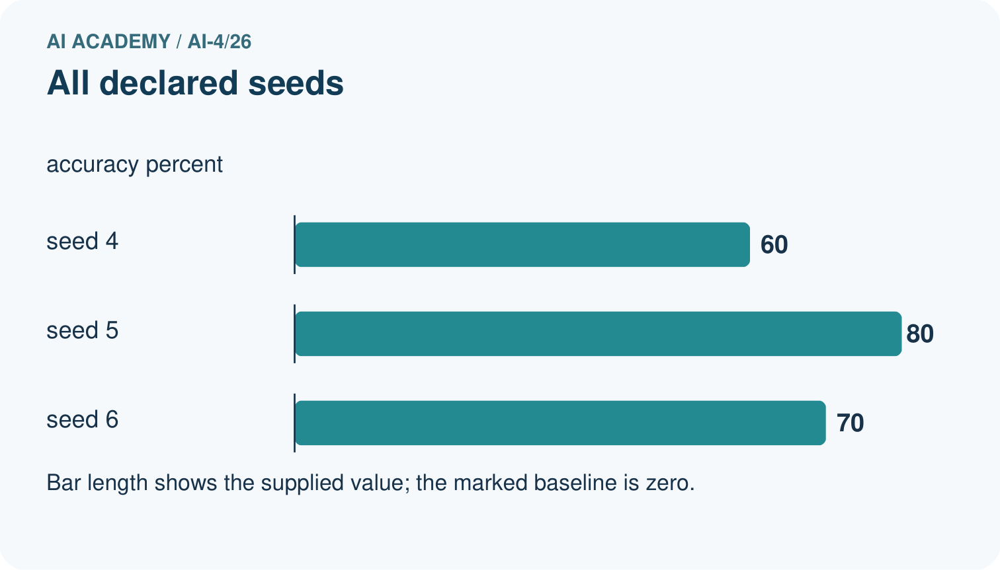
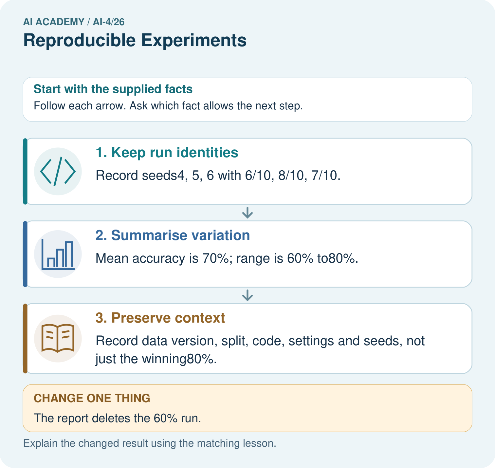
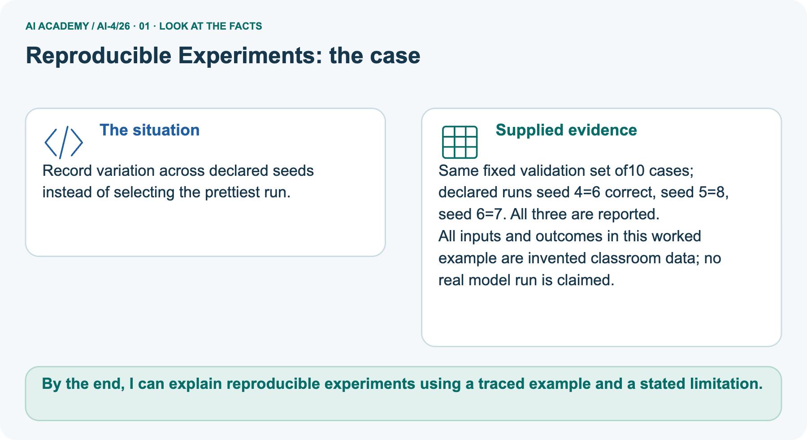
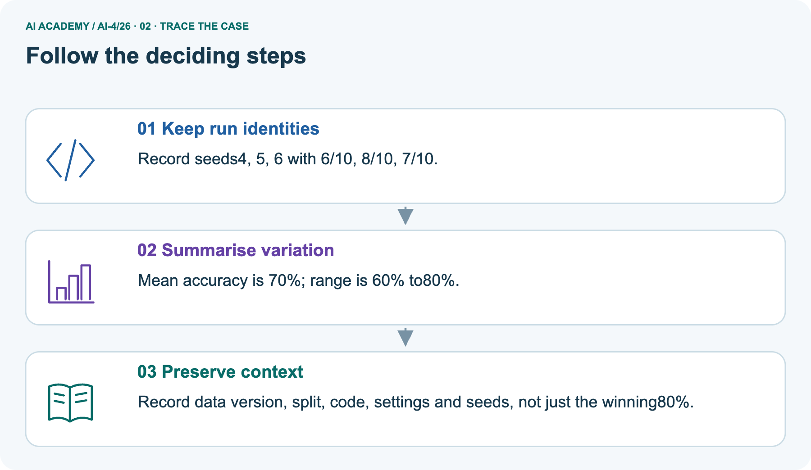
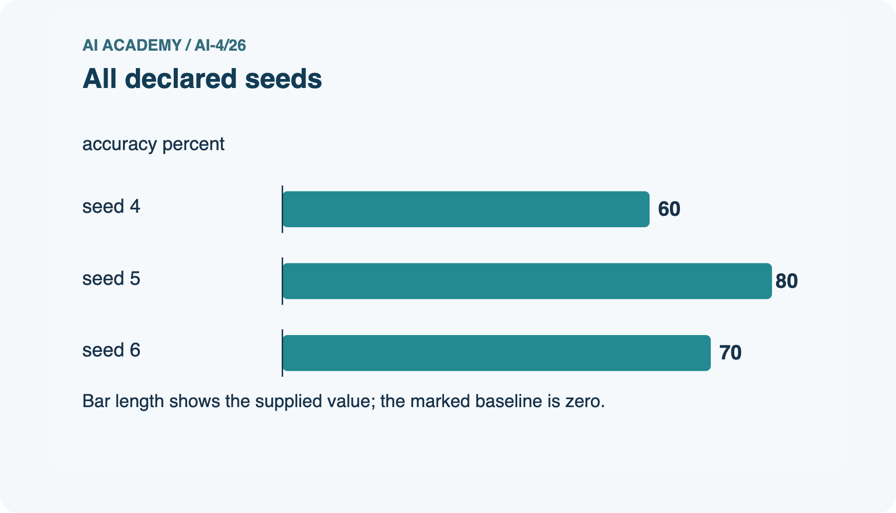
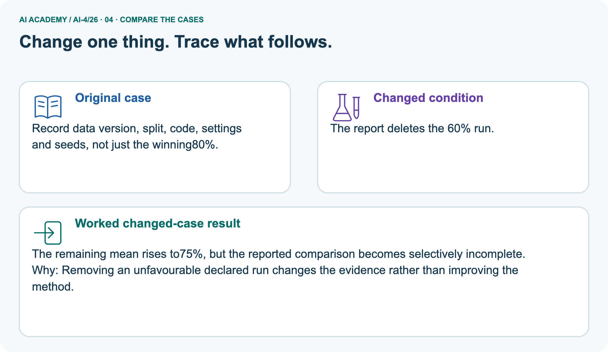
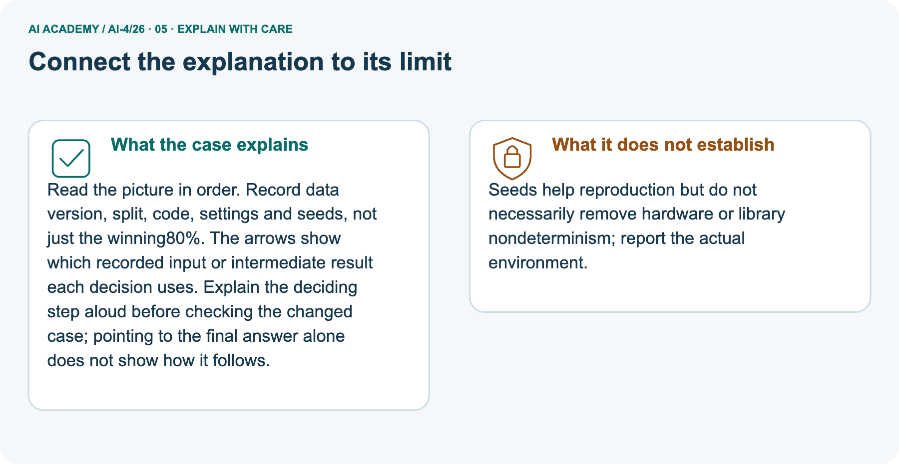
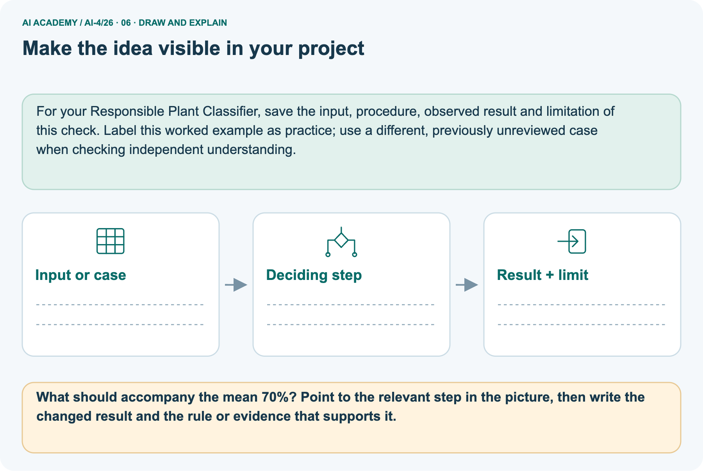

AI Academy · Level 4 · Grade 9 · Week 26 · Workbook
Reproducible Experiments
Learn to understand, design, build, test and explain AI systems responsibly.
Project: Responsible Plant Classifier
Workbook · 1 of 26
Recall and choose your starting point
Record your starting explanation for Reproducible Experiments before opening notes. Show any later correction separately.
Try the recall before opening notes. Then use a different colour or a labelled second line to correct your explanation.
Metrics Match Consequences
Without opening the old lesson, explain one key idea from Metrics Match Consequences. Give an example and a mistake that the idea helps you avoid.
Hold Out Test Data
Without opening the old lesson, explain one key idea from Hold Out Test Data. Give an example and a mistake that the idea helps you avoid.
Mean, Median, and Baselines
Without opening the old lesson, explain one key idea from Mean, Median, and Baselines. Give an example and a mistake that the idea helps you avoid.
Workbook · 2 of 26
Practise with fading help
Complete the supported Reproducible Experiments trace and record the first step you can explain without help.
Use W2: Improve a record for Experimental records and seeds. Record the answer once; the lesson and workbook refer to the same attempt.
| Given inputs | Procedure I chose | Middle steps | Result and check |
|---|---|---|---|
Workbook · 3 of 26
Individual reasoning check
Check the proposed Reproducible Experiments explanation against the supplied facts before discussing it.
Use the worked case for Experimental records and seeds. Proposed explanation: “A final answer is enough”. Decide whether this explanation is supported.
Point to the step or supplied fact that decides; explain your repair if needed.
Workbook · 4 of 26
Independent transfer case
Write one first attempt at the reserved independent case before feedback. Repeated copies of that case refer to the same recorded attempt.
Independent case: Apply independently
Declared seeds 1, 2, 3 produce 9/12, 8/12, 10/12 correct. Compute the mean accuracy and range.
Attempt this case before feedback. Record any help. Earlier examples below are further practice; a case already practised with feedback cannot establish fresh transfer.
Workbook · 5 of 26
Your learning target
Connect the Reproducible Experiments target to a trace and a justified conclusion.
Two teams use the same random seed but different label files. Their results differ. List the records needed to reproduce the experiment.
Workbook · 6 of 26
Solve the given case
Solve the supplied Reproducible Experiments case and show the deciding evidence.
A report says accuracy85% without data split, code version, seed or preprocessing.
Specify reproducibility records.
Show your trace, calculation or evidence
Workbook · 7 of 26
Check a changed case
Apply the procedure to the changed case and record why the conclusion follows.
Two runs use different random splits and different feature sets. Their scores differ. What must be recorded, and why is the cause unclear?
My independent answer and reason
Week 26 Test and reflect
Workbook · 8 of 26
Design a revealing test
Specify a changed input, expected result and observation separately.
Create a changed input, boundary case or missing-information case. Write the expected answer or safe response before testing.
| Test record | My evidence |
|---|---|
| Changed input or condition | |
| Expected answer or fallback | |
| Observed result | |
| Why the result occurred |
Workbook · 9 of 26
Project checkpoint
Justify what Reproducible Experiments adds to Responsible Plant Classifier and keep the evidence.
Give every Plant Classifier experiment an ID and immutable record linking dataset, split, code, settings, predictions, and metrics.
The project change and evidence I will keep
Workbook · 10 of 26
Self check
Judge explanation, evidence, transfer and limits separately; attach the work behind your judgement.
- I can explain the mechanism.
- I can show evidence.
- I can handle a changed case.
- I can name a limit.
Mark each as not yet, with help or independently, and attach supporting work.
Teacher review ____________________ Next step ____________________
Workbook · 11 of 26
Transfer practice from the original programme
Use this earlier case as transfer practice. A case already discussed with feedback is not fresh assessment evidence.
Two teams use the same random seed but different label files. Their results differ. List the records needed to reproduce the experiment.
Record support used: none, hint or teacher explanation.
Workbook · 12 of 26
W1 Summarize all runs
Summarize all runs. Apply the supplied Reproducible Experiments facts and keep your reasoning.
Where to find the supplied example
Reference for this exercise: open this week’s student lesson, “Reproducible Experiments”, at “See how it works” and “Follow a worked example”. Use the original worked values or code named in the question; the later pictorial case is a separate example. Keep this reference beside your workbook while practising.
Calculate the worked mean and range in percentage points.
Workbook · 13 of 26
W2 Improve a record
Improve a record. Apply the supplied Reproducible Experiments facts and keep your reasoning.
A file contains only seed 22 and 80 percent. Name four missing items.
Workbook · 14 of 26
W3 Separate two ideas
Separate two ideas. Apply the supplied Reproducible Experiments facts and keep your reasoning.
Does identical output prove a valid experiment?
Workbook · 15 of 26
W4 Apply independently
Attempt before feedback. If this repeats the selected independent case, reuse that first attempt; otherwise keep a separate record. Apply independently. Apply the supplied Reproducible Experiments facts and keep your reasoning.
Declared seeds 1, 2, 3 produce 9/12, 8/12, 10/12 correct. Compute the mean accuracy and range.
Workbook · 16 of 26
W5 Handle a failed run
Handle a failed run. Apply the supplied Reproducible Experiments facts and keep your reasoning.
One planned seed fails before prediction. How should it appear in the record?
Workbook · 17 of 26
Versioned experiments — W1 Record a run
Use the supplied Reproducible Experiments task to record your reasoning, evidence and next step.
List five items needed to reproduce a scoring run.
Workbook · 18 of 26
Versioned experiments — W2 Compute a comparison
Use the supplied Reproducible Experiments task to record your reasoning, evidence and next step.
A has fun 3 and learning 2. Score it under weights (2,1) and (1,2).
Workbook · 19 of 26
Versioned experiments — W3 Repair an experiment
Use the supplied Reproducible Experiments task to record your reasoning, evidence and next step.
A learner changes weights, input ratings and the time limit together. Why is attribution difficult?
Workbook · 20 of 26
Versioned experiments — W4 Design independently
Use the supplied Reproducible Experiments task to record your reasoning, evidence and next step.
Plan two versions for C (fun 5, learning 1) and D (fun 2, learning 5), using weights (2,1) and (1,2). Record expected scores, ranks, fixed data and a separate final-case plan.
Workbook · 21 of 26
Versioned experiments — W5 Protect evaluation
Use the supplied Reproducible Experiments task to record your reasoning, evidence and next step.
You revise the policy after reading final-case failures. Are those cases still untouched holdout evidence?
Workbook · 22 of 26
Feedback, return check and learning record
Record the first repaired step and a different case to revisit after a delay.
| Evidence | My record |
|---|---|
| Worked alone / hint / model | |
| First step I repaired and why | |
| New case checked later; date and result | |
| What I can now explain without notes | |
| One remaining question |
Revisit this idea with your teacher after a delay. Familiarity is different from explaining and using it on a changed case.
Workbook · 23 of 26
Pictorial case practice: Reproducible Experiments
Record variation across declared seeds instead of selecting the prettiest run. Explain the labelled step before checking the changed condition.
Record variation across declared seeds instead of selecting the prettiest run.
Same fixed validation set of10 cases; declared runs seed 4=6 correct, seed 5=8, seed 6=7. All three are reported.
All inputs and outcomes in this worked example are invented classroom data; no real model run is claimed.


What should accompany the mean 70%? Point to the relevant step in the picture, then write the changed result and the rule or evidence that supports it.
Record the help used
Support used: alone / hint / worked example. This record is practice evidence.
Project connection: For your Responsible Plant Classifier, save the input, procedure, observed result and limitation of this check.
Label this worked example as practice; use a different, previously unreviewed case when checking independent understanding.
Workbook · 24 of 26
Project portfolio milestone
Keep this week’s input, deciding step, result and limit together in the Responsible Plant Classifier record.
Project: Responsible Plant Classifier
Current milestone: Prepare the demonstration. Gather reproducible instructions, evidence, access checks and remaining limitations.
For your Responsible Plant Classifier, save the input, procedure, observed result and limitation of this check.
Label this worked example as practice; use a different, previously unreviewed case when checking independent understanding.
| Evidence to keep | My record |
|---|---|
| This week’s input and deciding step | |
| Prediction and actual result (or labelled paper trace) | |
| One change since the previous checkpoint and why | |
| One error or limit and the next test |
Workbook · 25 of 26
Supported practice and learning evidence
Try the supported questions before comparing with hints and feedback. Record what you repaired and the evidence you retained.
Use this supported practice once, in the browser or on paper. Keep the reserved independent assessment for a separate first attempt before teacher feedback.
Record variation across declared seeds instead of selecting the prettiest run.
Practice 1: explain the deciding evidence
Which labelled step matches this detail? Record data version, split, code, settings and seeds, not just the winning80%.
1. Preserve context
2. Keep run identities
3. Summarise variation
Hint · try first
Hint if needed: Read the steps in the pictorial case. Match the supplied detail to the stage that performs or records it.
Feedback · compare after trying
After your attempt, compare with the supported explanation: Preserve context Record data version, split, code, settings and seeds, not just the winning80%. Read the picture in order.
Record data version, split, code, settings and seeds, not just the winning80%. The arrows show which recorded input or intermediate result each decision uses.
Explain the deciding step aloud before checking the changed case; pointing to the final answer alone does not show how it follows.
Practice 2: explain the deciding evidence
Changed case · predict first
Changed-case practice: The report deletes the 60% run. Which conclusion is supported by the supplied facts?
1. The remaining mean rises to75%, but the reported comparison becomes selectively incomplete.
2. This one example guarantees correct results for every future input.
3. We can decide the result without examining the changed input or the procedure.
Hint · try first
Hint if needed: Use the changed condition and the deciding step in the pictorial trace. The answer must say what follows from those facts.
Feedback · compare after trying
After your attempt, compare with the supported explanation: The remaining mean rises to75%, but the reported comparison becomes selectively incomplete.
Removing an unfavourable declared run changes the evidence rather than improving the method.
Repair a missing building block
Review Metrics Match Consequences (ai-4/25). Goal: Apply a declared score threshold including equality. Short practice: Which labels determine the false-alarm count at threshold 0.4?
Point to the relevant step in the picture, then write the changed result and the rule or evidence that supports it.. Return to this week and explain what you changed.
Review Hold Out Test Data (ai-4/23). Goal: Freeze the full evaluation procedure before testing. Short practice: What is needed for an honest final claim about the revised version?
Point to the relevant step in the picture, then write the changed result and the rule or evidence that supports it.. Return to this week and explain what you changed.
Review Mean, Median, and Baselines (ai-4/20). Goal: Fit mean and median constant baselines on training targets. Short practice: Does either original baseline win under evaluation MAE?
Point to the relevant step in the picture, then write the changed result and the rule or evidence that supports it.. Return to this week and explain what you changed.
Predict, run and debug
The browser lab lets you edit the supported Python examples already included in this lesson. Predict first, run, inspect the actual output or error, change one input, then run again.
Keep code, predictions, actual results and a reasoned revision together. On paper, label your result as a trace rather than an execution.
Keep your completed work
Use Download completed work in the hosted lesson to export your answers, reflections, practice feedback and code-run evidence. Open the HTML copy to read or print it.
Drafts stay in this browser when storage is available; clear drafts on a shared device.
Workbook · 26 of 26
Visual concept journey
Explain each Reproducible Experiments picture from its labels, then record a relevant limit.
01. Reproducible Experiments: the case

Record variation across declared seeds instead of selecting the prettiest run. Supplied facts: Same fixed validation set of10 cases; declared runs seed 4=6 correct, seed 5=8, seed 6=7. All three are reported.
All inputs and outcomes in this worked example are invented classroom data; no real model run is claimed.
Point to the given fact that matters most. Explain why it matters.
02. Follow the deciding steps

Keep run identities: Record seeds4, 5, 6 with 6/10, 8/10, 7/10. → Summarise variation: Mean accuracy is 70%; range is 60% to80%. → Preserve context: Record data version, split, code, settings and seeds, not just the winning80%.
Point to each numbered stage and explain which recorded input it uses.
03. All declared seeds

All declared seeds. Units: accuracy percent. seed 4: 60. seed 5: 80. seed 6: 70.
Read the labels and values. Explain the relationship the model shows.
04. Change one thing. Trace what follows.

Original case: Record data version, split, code, settings and seeds, not just the winning80%. Changed condition: The report deletes the 60% run.
Expected result: The remaining mean rises to75%, but the reported comparison becomes selectively incomplete. Reason: Removing an unfavourable declared run changes the evidence rather than improving the method.
Predict before checking the worked changed-case result. Name what changed and what the supplied facts allow you to conclude.
05. Connect the explanation to its limit

Read the picture in order. Record data version, split, code, settings and seeds, not just the winning80%. The arrows show which recorded input or intermediate result each decision uses.
Explain the deciding step aloud before checking the changed case; pointing to the final answer alone does not show how it follows.
Limit: Seeds help reproduction but do not necessarily remove hardware or library nondeterminism; report the actual environment.
Explain the case, then point to a limit on the claim.
06. Make the idea visible in your project

For your Responsible Plant Classifier, save the input, procedure, observed result and limitation of this check.
Label this worked example as practice; use a different, previously unreviewed case when checking independent understanding. Draw your input, deciding step, result and limit.
Supported question: What should accompany the mean 70%? Point to the relevant step in the picture, then write the changed result and the rule or evidence that supports it.
Draw your project trace and justify the deciding step using evidence.